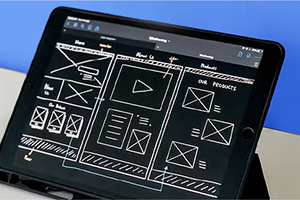

28
მაისი
ვებგვერდების აწყობა (Front End: HTML, CSS)

კურსის განმავლობაში გაეცნობი იმ პროგრამულ ინსტრუმენტებს (Front End: HTML, CSS), რომელთა გამოყენებითაც შეძლებ ვებგვერდის აწყობას და შეისწავლი ამ პროცესს. კურსის მიზანია შეიძინო ის ცოდნა და უნარები, რომელიც ვებგვერდის შესაქმნელადაა საჭირო. პრაქტიკული კურსის ბოლოს, ფინალურ პროექტზე მუშაობისას, დამოუკიდებლად შექმნი ვებგვერდს. კურსი არის უფასო და მისი წარმატებით დასრულების შემდეგ, მიიღებ სერტიფიკატს.